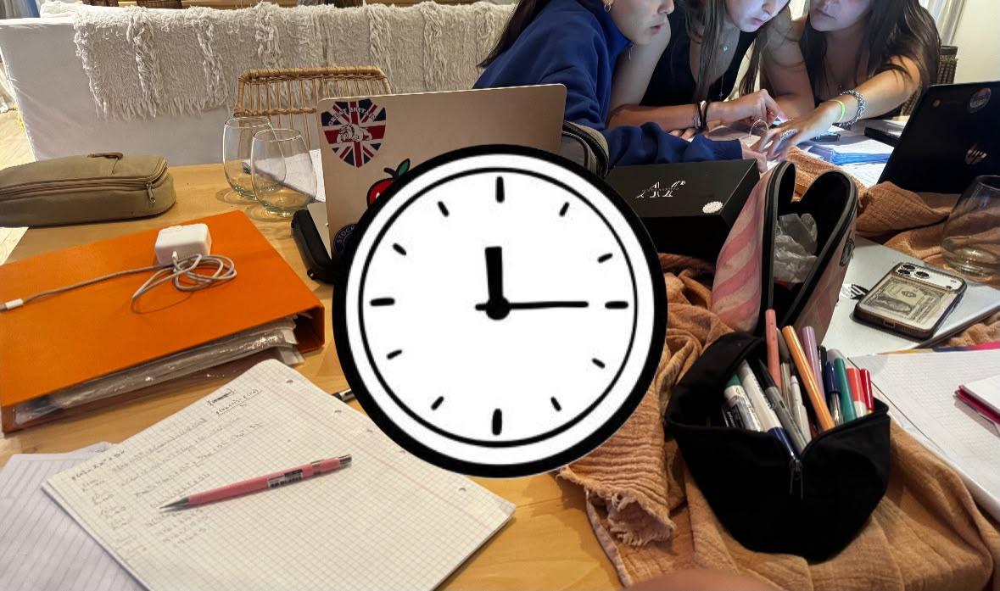

Autogestión y organización del tiempo es otra habilidad que considero en mi, porque intento organizarme para cumplir con mis responsabilidades y llegar a tiempo con las entregas del colegio. Durante el año tengo que combinar pruebas, trabajos prácticos, proyectos y otras actividades, por lo que necesito priorizar las tareas y organizarme según las fechas de entrega. Por eso, considero que tengo esta habilidad, porque intento encontrar una manera de cumplir con mis obligaciones y adaptarme cuando se me juntan varias cosas al mismo tiempo.
Volver a las habilidades© 2026 - Mi Portfolio